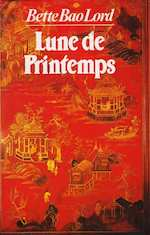
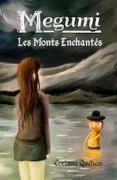
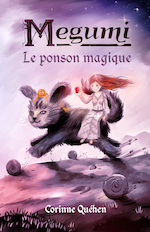
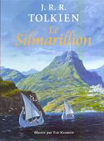
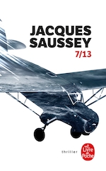

2020
Décembre
- 19 —  Lune de Printemps de Bette Bao Lord
- 06 — Les dents de Chastel
- 01 — Maryline trompe la mort de Diatomée
- 01 — Relecture de mon roman Objectif petit ami
Novembre
- 30 — Extrabêtes de Diatomée
- 28 — Nos Nuits de Diatomée
- 27 — Ailleurs de Diatomée
-
25 —
Relecture des aventures de Megumi

- 16 —  Le Silmarillion de J.R.R. Tolkien
- 07 — Armée ou défense civile non-violente
-
05 —
 Mais moi je vous aimais de Gilbert Cesbron
Mais moi je vous aimais de Gilbert Cesbron
- 02 — Des friches et des chiffres de Odette Laplaze-Estorgues
Octobre
Septembre
-
20 —
Drame, enquête et science-fiction
J’aimerais tellement que tu sois là (Graham Swift), Équinoxe (Michael White), La mère des mondes (Isaac Asimov)
- 07 — 💖 Naruto de Masashi Kishimoto
Août
Juin
- 24 — Les larmes rouges de Georgia Caldera
-
16 —
Lectures hétéroclites de contes indiens à Guillaume Musso
Les aventures du Gourou Paramarta, L’appel de l’ange (Guillaume Musso)
- 09 —  7/13 de Jacques Saussey
-
03 —
3 romans, 3 registres différents
Vampire brothers (Alice H. Kinney), Sans laisser de traces - Une enquête de Riley Paige (Blake Pierce), Âmes sœurs (John Marrs)
Mai
- 15 — Petit traité de vie intérieure de Frédéric Lenoir
- 07 — 💖 Avatar : Le dernier maître de l’air
- 03 — Les secrets de grand-mère pour le potager de Laurent Vinet
Avril
- 29 — Série Robert Langdon de Dan Brown
- 06 — 💖 Hernani de Victor Hugo
- 02 — L’esprit de la forêt de Jikiti Buinaima